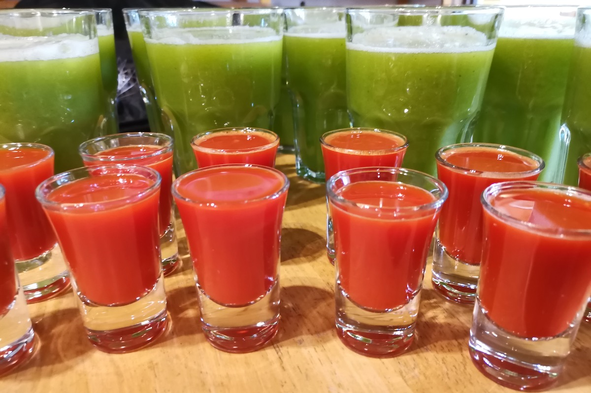

From the valley
Blog
Nutrition, fasting & wellness notes
Thoughts from our nutritionist, our facilitators and our own archives — on juice fasting, yoga, Chinese medicine and life in this valley near Lagos.


“If you need a re-set, some space and time to come alive again in a supportive, genuine, good-hearted environment — go. One of the best things I’ve ever done for myself.”